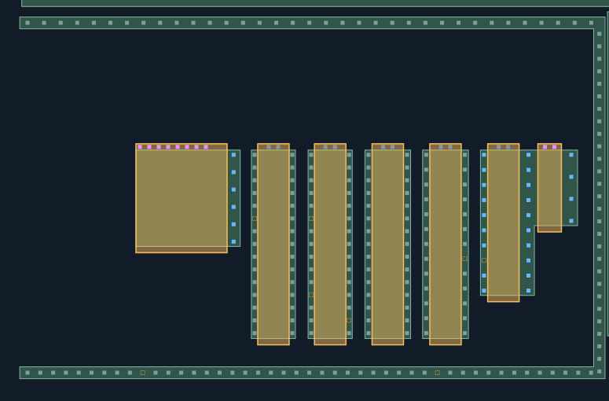
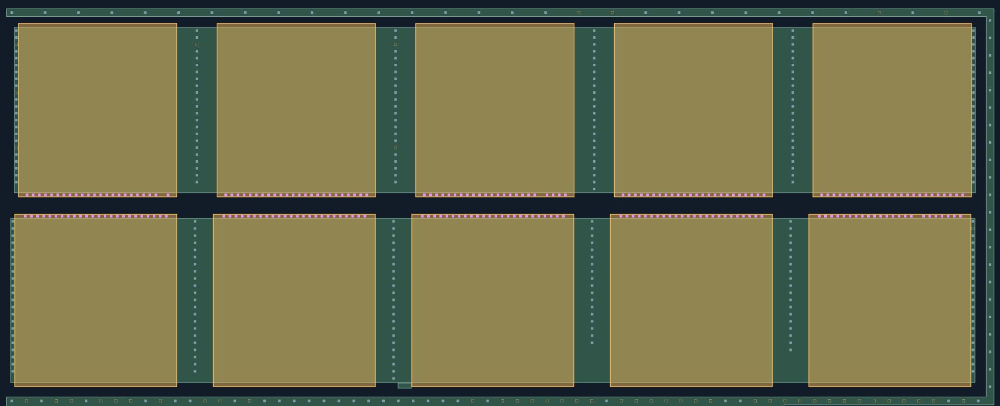
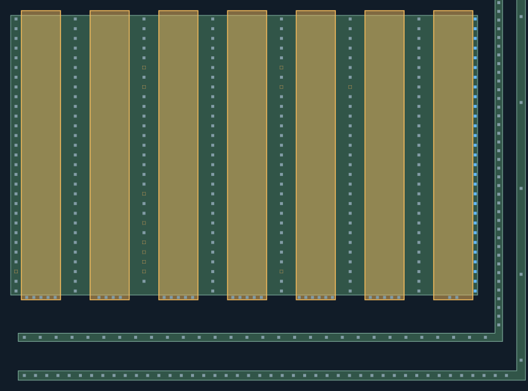
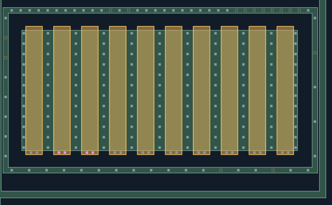

B与D按原范围批准，不重新提取；B的孔数细节意见保留。A按已确认的阶梯最右两栅G25/G26共享扩散修订，两侧环不相连。C中间两条亮带作为上下排栅端分别定位，上下环保持。E直接执行已批AA右缘+6建议。F使用较弱实测支持和邻栅相位定位，不伪造独立强峰。本页A／C／F显示几何与CT已通过人工复核；全幅完整性仍未知。
用户确认：A合理批准、C合理批准、F合理批准。共享AA、宽MOS匹配、两条栅端带CT及F补孔／双孔相位按当前展示锁定；B、D和E前阶段批准保留。B个别孔数意见、旧661孔几何细节意见、弱信号来源与其他未知状态继续保留。
本次批准原话 · 分项批准范围 · 验收锁定 · 批准前原复核页
模型与源图定位未重算；橙框仍是检查空位，未按本次总体批准补成CT。不宣称全幅完成或新增M1/net。
B：连接关系通过，保留个别孔数误差意见。D：通过。E：已执行批准的AA右缘+6与29个右端源漏孔；这些不重复审批。原2709已审基准不变。
新增A16＋C237＋E29＋F3＝285候选；24条已有CT只作局部几何／AA归属修订，源图证据原样保留。
分项批准状态 · 覆盖与仍未知内容本页只核局部修订；B/D已批准并保留。设计坐标微调与原图证据分开；不推M1/net。
双击图像可在新页放大查看。

本页只核局部修订；B/D已批准并保留。设计坐标微调与原图证据分开；不推M1/net。
双击图像可在新页放大查看。

本页只核局部修订；B/D已批准并保留。设计坐标微调与原图证据分开；不推M1/net。
双击图像可在新页放大查看。

本页只核局部修订；B/D已批准并保留。设计坐标微调与原图证据分开；不推M1/net。
双击图像可在新页放大查看。
